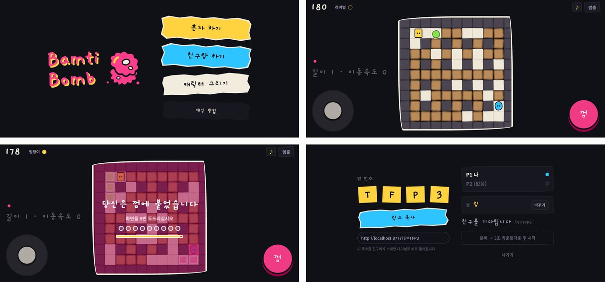
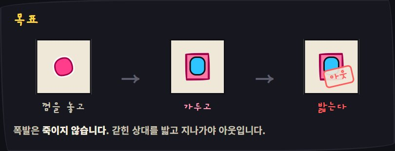
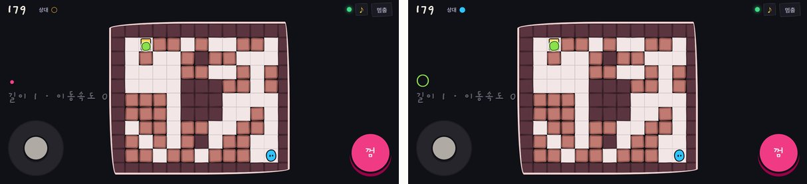

격자 위에서 껌을 뱉어 놓고, 터진 껌에 상대를 붙여 잡는 2인 대전 게임이다. 봄버맨 계열이지만 규칙이 하나 다르다. 폭발은 죽이지 않는다. 맞으면 그 자리에 들러붙어 갇히고, 갇힌 상대를 밟고 지나가야 아웃된다. 일부러 어설프게(밤티) 그린 그림과 말투로 감쌌다.
혼자 봇이랑, 한 컴퓨터에서 키보드를 나눠 둘이, 그리고 링크 하나로 친구와 온라인 대전을 할 수 있다. 설치도 로그인도 없다. 주소는 bamti-bomb.fly.dev. 이 글의 대부분은 마지막 것, 온라인 대전을 어떻게 붙였나에 관한 이야기다.


만든 순서 — 기획서, 프로토타입, 구현
← 옆으로 밀어 보기 →
기획서에는 법적 금지 사항부터 적었다. 비슷한 장르 게임의 이름·캐릭터·그림·소리는 앱 글자, 파일명, 변수명, 주석 어디에도 쓰지 않는다. 규칙은 저작권 대상이 아니지만 이름과 그림은 대상이라서다. 폭탄 대신 씹던 껌을 고른 것도 그래서다. "맞으면 즉사가 아니라 바닥에 붙어 갇힌다"는 규칙을 폭탄보다 껌이 훨씬 자연스럽게 설명한다.
기획서 원칙 중 끝까지 붙잡은 한 줄이 있다. 어설픔이 게임 이해를 방해하는 순간, 그건 어설픔이 아니라 결함이다. 그림과 말투는 어설퍼도 판정과 조작은 정직해야 한다.
추가 사양에서는 한 컴퓨터 2인 모드를 온라인 대전보다 먼저 넣었다. 학교 컴퓨터실에서 옆자리 친구와 하는 상황을 노렸는데, 학교망은 WebSocket이 막혀 있는 경우가 흔해서 네트워크를 전혀 안 타는 쪽이 더 확실하게 돌아간다.
기획서와 실제가 많이 달라졌다
| 항목 | 기획서 | 실제 |
|---|---|---|
| 언어 · 빌드 | TypeScript + Vite | 순수 JS, 빌드 없음 (<script> 9개) |
| 그리기 | Canvas 2D | DOM + CSS |
| 온라인 구조 | 서버가 게임을 돌린다 (서버 권위) | 방장 브라우저가 돌리고, 서버는 중계만 |
| 연결 | WebSocket | WebRTC 직통, 안 되면 WebSocket 중계 |
| 예측 | 넣지 말 것 | 내 캐릭터는 내가 소유 |
| 스냅샷 | 15Hz + 100ms 버퍼 | 20Hz, 버퍼 없음 |
| 라운드 | 90초 | 180초 |
| 갇힌 채 또 맞으면 | 즉시 아웃 | 안 죽고 갇힘 시간만 처음부터 |
앞의 두 줄은 프로토타입 때문이다. Claude Design에서 만든 프로토타입이 DOM으로 짜여 있었고, 규칙·이동·폭발·봇까지 실제로 다 돌았다. 넘겨주는 문서에 "이 파일이 최종 정답이고, 로직은 거의 그대로 옮겨도 된다"고 적었으니, 그걸 TypeScript와 Canvas로 다시 짤 이유가 없었다. 라운드 시간이나 재피격 규칙은 프로토타입을 하며 반복해서 고친 결과다. 나머지 줄, 온라인 구조가 이 글의 본론이다.
구조 — 서버는 아무것도 판정하지 않는다
← 옆으로 밀어 보기 →
기획서는 서버 권위였다. 서버가 게임을 초당 30번 돌리고, 두 사람은 입력만 보내고 결과를 받아 그린다. 정석이고 치팅에도 강하다. 그런데 그러려면 게임 로직을 서버에서도 돌려야 하고, 방이 늘수록 서버가 일을 한다.
실제로는 방장 브라우저가 게임을 돌리고 서버는 메시지를 반대편으로 넘기기만 한다. 서버가 게임 메시지를 다루는 부분은 이게 전부다.
if (m.t === "relay") {
const peer = peerOf(ws.room, ws.slotIdx);
if (peer) send(peer, { t: "relay", d: m.d }); // 내용은 안 본다
}덕분에 서버는 가장 작은 기계(공유 CPU 1개, 메모리 256MB) 한 대로 충분하고, 방이 몇 개든 CPU를 거의 안 쓴다. 대신 방장이 나가면 판이 끝난다. 서버가 상태를 안 들고 있으니 이어받을 수가 없다. 2인 대전이라 감수할 만한 거래로 봤다.
권위(authority) — 온라인 게임에서 "무엇이 진짜 상태인가"를 정하는 쪽. 서버 권위는 서버가, 호스트(방장) 권위는 한 플레이어의 컴퓨터가 정한다. 나머지는 그걸 받아 그린다.
WebRTC 직통, 안 되면 서버 중계
서버를 거치면 그만큼 돌아간다. 그래서 서버는 둘을 소개만 하고, 붙고 나면 두 브라우저가 WebRTC로 직접 주고받는다.
← 옆으로 밀어 보기 →
어떤 망에서는 직통이 끝내 안 뚫린다(일부 회사·학교망). 그런 망을 위한 중계 서버(TURN)는 따로 두지 않았다. 대신 그냥 원래 서버로 중계해서 계속 굴러가게 했다. 느려질 뿐 끊기지는 않는다. 보내는 쪽 코드는 한 줄로 갈린다.
if (this.dc && this.dc.readyState === "open") { this.dc.send(...); return; } // 직통
this.send({ t: "relay", d: d }); // 없으면 서버로
WebRTC를 붙이면서 "영영 안 붙는" 함정을 세 번 밟았다.
| 함정 | 무슨 일이 생기나 → 규칙 |
|---|---|
| 동시 제안 | 양쪽이 동시에 연결을 제안하면 충돌한다. → 제안(offer)은 방장만 만든다 |
| 각자 재시도 | 한쪽이 새로 제안하는 순간 다른 쪽이 붙던 연결을 버린다. → 재시도 타이머도 방장만 돌린다 |
| 확인 중 끊기 | 경로를 맞춰 보는 중(checking)에 끊으면 매번 처음부터다.→ 그동안은 건드리지 않는다 |
그리고 연결 후보(ICE)가 상대의 연결 정보보다 먼저 도착하는 일이 흔해서, 먼저 온 후보는 줄 세워 뒀다가 정보가 오면 넣는다.
WebRTC — 브라우저끼리 서버를 거치지 않고 직접 데이터를 주고받는 기술. 화상 통화에 쓰이는 그것이다. 처음 서로를 찾을 때만 중간 다리(시그널링 서버)가 필요하다.
NAT — 집 공유기처럼 여러 기기가 바깥 주소 하나를 나눠 쓰게 하는 장치. 종류에 따라 바깥에서 안으로 직접 들어오는 길이 막혀 있어서 직통이 안 뚫린다.
되돌리지 않는다 — 내 캐릭터는 내가 정한다
처음에는 넘겨받은 사양서가 권한 대로, 방장이 참가자 캐릭터까지 판정했다. 참가자가 방향키를 누르면 일단 예측해서 움직이고, 방장의 판정이 다르면 되돌린다. 흔한 방식이다.
← 옆으로 밀어 보기 →
되돌림 규칙을 아무리 다듬어도 소용이 없어서 구조를 바꿨다. 내 캐릭터의 위치와 이동은 내가 소유한다. 참가자는 방장에게 묻지 않고 움직이고, 움직였다는 사실만 알린다. 방장은 판정하지 않고 받아 적는다. 아무도 남의 캐릭터를 고치지 않으니 되돌림 자체가 없다.
| 누가 | 무엇을 정하나 |
|---|---|
| 각자 자기 | 내 캐릭터 위치 · 이동, 내가 껌에 맞았나 |
| 방장 | 껌 개수 · 갇힘 · 아웃 · 아이템 · 남은 시간 · 맵 |
"내가 맞았나"까지 각자 정하는 데는 이유가 있다. 방장이 판정하면, 방장 화면 속 내 위치는 늘 조금 과거라서 "분명히 피했는데 맞았다"가 생긴다. 그래서 참가자도 자기 화면에서 도화선을 직접 태우고 직접 터뜨린다. 껌의 위치·사거리·남은 시간이 계속 동기화되니 같은 칸에 같은 폭발이 생기고, 내 화면에서 불꽃이 뜬 순간과 맞았다고 판정되는 순간이 일치한다.
대가는 분명하다. 참가자가 작정하고 조작하면 자기 이동은 속일 수 있다. 친구끼리 하는 게임이라 받아들였다. 갇힘·아웃·아이템은 방장이 정하니 승패 자체를 뒤집지는 못한다.
내 판정을 지우는 스냅샷
← 옆으로 밀어 보기 →
"맞았다"를 내가 정하면 새 문제가 생긴다. 방장은 아직 그걸 모르고, 그 사이 도착한 스냅샷에는 "갇힘 0"이 적혀 있다.
그대로 받으면 갇힘 화면이 깜빡이다 사라진다. 방장이 내 판정을 반영한 스냅샷이 올 때까지 내 판정을 지키는 장치(pendingHit)를 뒀다.
스냅샷 — 작게, 자주, 뒤로는 안 감기
방장은 1초에 20번 상태를 보낸다. 크기를 줄이려고 한 것들:
- 좌표는 칸 번호(정수)만 보낸다. 칸 사이를 미끄러지는 중의 픽셀 위치는 안 보낸다
- 플레이어 상태를 객체가 아니라 배열로 싼다. 매번 키 이름이 같이 나가지 않게
- 보드는 부서진 칸만 보낸다. 처음엔 시드만 보내 양쪽이 같은 맵을 만든다
- 참가자가 놓은 껌은 음수 번호. 방장 껌 번호와 겹치지 않는다
실측 크기는 평소 148바이트, 가장 큰 순간 823바이트다. 20번 보내도 초당 3~16KB로, 기획서 목표(15KB/s) 안팎이다. 기획서는 15Hz였지만 대역폭에 여유가 있으니, 교정이 늦게 얹히는 몫(최대 66ms)을 줄이는 쪽을 택했다.
스냅샷 — 어느 순간의 게임 상태를 통째로 찍어 보내는 메시지. 받는 쪽은 그걸로 화면을 맞춘다.
시드 — 난수의 출발점. 같은 시드를 넣으면 같은 순서의 "무작위" 숫자가 나온다. 맵 전체 대신 숫자 하나만 보내면 양쪽이 똑같은 맵을 만든다.
기획서에 있던 100ms 버퍼 — 넣었다가 측정하고 뺐다
기획서에는 "스냅샷을 100ms 모아 두고 그 사이를 보간해서 그려라"가 있었다. 흔한 기법이다. 넣고 재 봤다.
| 버퍼 없음 | 100ms 버퍼 | |
|---|---|---|
| 흔들림 지표 | 0.004 | 0.44 |
| 가장 크게 튄 거리 | 2.67px | 5.33px |
| 지연 | — | +100ms |
지연만 늘고 흔들림은 오히려 커졌다. 그 버퍼는 스냅샷에 위치만 담길 때 필요한 장치다. 여기서는 "한 칸 이동의 몇 % 지점인가"라는 애니메이션 시계까지 같이 보내서, 늦게 도착해도 위치를 정확히 되살릴 수 있다. 그래서 뺐다.
뒤로는 절대 감지 않는다
} else if (sameMove) {
// 같은 한 칸을 그리는 중. 뒤처졌으면 따라잡되 뒤로는 절대 되감지 않는다
if (mv[4] > p.mv.t) p.mv.t += (mv[4] - p.mv.t) * 0.3;
}스냅샷은 항상 조금 과거다. 이미 끝낸 이동을 뒤늦게 받았다고 이동 중간으로 끌고 가면 한 칸마다 뒤로 튄다. 앞서 있으면 무시하고, 뒤처졌을 때만 30%씩 따라잡는다.
그래도 튀면 — 그리는 단계에서 녹인다
← 옆으로 밀어 보기 →
방장 쪽 프레임이 밀리거나 네트워크가 한 번 튀면 상대가 한 칸 순간이동할 때가 있다. 원인을 하나하나 막는 대신 그리는 단계에서 흡수했다. 논리 위치는 바로 맞추고, 화면과의 차이는 오차로 들고 있다가 프레임마다 18%씩 줄인다. 64px 순간이동이 약 230ms에 걸친 미끄러짐이 된다. 한 프레임에 16px 넘게 튀었을 때만 작동해서 평소 이동에는 끼어들지 않는다. 평소 이동 뒤 누적 오차는 0으로 쟀다.
끊김 · 모바일 · 그 밖의 것
| 상황 | 처리 |
|---|---|
| 소켓 끊김 | 자리를 15초 맡아 둔다. 상대 화면에는 기다리는 중 배너 |
| 15초 안 복귀 | 브라우저에 저장해 둔 기기 ID로 같은 자리를 되찾고, 방장이 판을 다시 맞춰 준다 |
| 15초 넘김 | 남은 쪽 부전승 |
| 신호 없는 끊김 | 터널 뒤에서는 끊겨도 알림이 안 올 때가 있다. 30초마다 핑을 보내 죽은 연결을 직접 정리 |
| 방장 탭 숨김 | 브라우저가 뒤에 있는 탭의 프레임을 조여 판이 얼어붙는다. 조용히 멎느니 양쪽에 일시정지 화면을 띄운다 |
- 갇힘 탈출 횟수가 기기마다 다르다. PC는 12번, 터치는 9번. 그런데 탈출 횟수는 방장이 센다. 처음 인사(
hello)할 때 "나는 터치 기기"라고 같이 보내게 했다. 안 그러면 폰으로 들어온 친구가 PC 기준으로 갇힌다. - 조이스틱은 손가락이 닿은 자리가 중심이 된다. 고정된 원을 정확히 짚어야 하는 방식은 화면을 안 보고 조작하기 어려웠다.
- 갇힘 알림은 모드마다 다르게. 한 컴퓨터 2인에서는 화면 하나를 둘이 보니, 판을 덮으면 아직 살아 있는 사람 앞까지 막힌다. 보드 윗줄 띠로 줄였다(가림 100% → 8.6%). 혼자일 때는 보는 사람이 갇힌 본인뿐이라 판 전체를 덮는다.
- 친구가 그린 캐릭터가 안 쓰였다. 처음엔 방장이 그린 두 장으로 양쪽을 채웠다. 접속할 때 각자 자기 그림 한 장을 주고받게 바꿨다.
- 아웃이 안 보였다. 아웃되면 캐릭터가 그냥 사라졌다. 껌 조각이 튀고(0.43초) 옆으로 쓰러진 채 잠깐 남게(0.95초) 했다. 참가자는 죽었다는 사실만 듣고 같은 연출을 자기 화면에서 따로 튼다.
Canvas가 아니라 DOM
보드의 칸 하나하나가 <div>다. 화면 대부분이 가만히 있는 격자고, 움직이는 건 캐릭터·껌·폭발 몇 개뿐이다.
블록이 부서지면 그 칸 하나만 다시 칠하고, 나머지는 브라우저가 알아서 바뀐 곳만 다시 그린다.
손그림 느낌은 칸마다 모서리 둥글기를 조금씩 다르게 주고 살짝 돌려서 낸다.
서버 — 한 포트에 전부
서버는 Node 파일 하나다. 의존성은 ws 하나. 정적 파일과 WebSocket을 같은 포트에서 받는다.
내 컴퓨터에서 띄워 Cloudflare 터널로 친구를 부를 때, 포트가 하나면 터널도 하나만 열면 게임과 통신이 같이 나간다.
| 설정 | 값 | 이유 |
|---|---|---|
| 지역 | 도쿄 | 한국에서 가장 가깝다 |
| 기계 | 공유 CPU 1 · 256MB | 판정을 안 하니 이걸로 충분 |
| 자동 정지 | suspend | 아무도 없으면 메모리째 얼려 두고, 요청이 오면 깬다 |
| 볼륨 | /data | 방문자 숫자가 배포할 때마다 0으로 돌아가지 않게 |
- suspend는 종료 신호를 안 보낸다. 메모리를 그대로 얼리니 "꺼지기 전에 저장" 코드가 안 돈다. 그래서 숫자를 20초마다 저장한다.
- 초당 메시지 제한을 30에서 120으로 올렸다. 기획서의 30은 입력만 오갈 때 이야기다. 스냅샷 20Hz에 WebRTC 연결 후보가 한꺼번에 쏟아지는 순간까지 감당해야 했다. 넘친 것은 조용히 버리고 연결은 안 끊는다.
/health에 버전을 붙였다. 배포가 실제로 바뀌었는지, 방이 새고 있지는 않은지 눈으로 확인하는 창구다.- 카톡 미리보기 그림은 절대 주소여야 뜬다. 서버가 지금 접속한 주소로 채워 넣는다.
방문자 수 — 개인정보를 남기지 않고 세기
← 옆으로 밀어 보기 →
HTML 요청만 세는 이유는, js·css·그림까지 세면 한 명이 수십 명으로 부풀기 때문이다. 봇을 거르지 않으면 릴스를 올리기도 전에 숫자가 불어 있다. 하루의 경계를 한국 시간으로 둔 건, 서버 기본값(UTC)이면 아침 9시에 날짜가 바뀌어서다.
해시 — 입력을 뒤섞어 고정 길이 문자열로 만드는 함수. 같은 입력이면 같은 결과지만 결과에서 입력을 되돌릴 수 없다.
소금(salt) — 해시하기 전에 섞는 무작위 값. 소금을 모르면 "이 IP의 해시가 뭔지" 미리 계산해 맞춰 볼 수 없다. 매일 바꾸고 지우면 날짜 사이도 끊어진다.
그 뒤 — 남는 서버가 일을 떠맡았다
판정을 안 하니 CPU는 놀았고, 방문자 숫자를 담으려고 붙인 볼륨도 몇 KB만 쓰고 있었다. 9월에 이 서버에 일이 붙었다.
- Snake Pet 다운로드 수 — 설치형 앱이라 방문자가 없다. 깃허브 공개 API에서 릴리스 다운로드 수를 가져와 같은 관리 페이지에 띄운다(10분 캐시).
- 학사모 비프리의 아파트 건설현장 순위표 —
/api/scores/bfree. 점수 상한, IP당 횟수 제한을 서버 안에 둔다. 지금 기록이 461개 쌓여 있다. - 그 게임의 방문 집계 — 그 페이지는 Cloudflare가 내보내서 이 서버를 안 거친다. 페이지가 열릴 때 1×1 그림(
/beacon.gif)을 부르게 해서 센다.
순위표를 붙인 다음 날, 요청 한 번에 서버가 죽는 구멍을 찾았다. /api/scores/__proto__.
게임 이름 자리에 자바스크립트의 특수한 이름이 들어가 오류가 났고, 그게 처리되지 않은 채 Node 프로세스를 통째로 내렸다.
순위표만이 아니라 같은 서버의 이 게임 대전까지 같이 죽는다.
같은 날 프로젝트 폴더 전체가 웹으로 내려받아지던 것, 경로 검사가 /app-evil을 /app 안으로 착각하던 것도 막았다.
자세한 원인과 고친 방법은 건설현장 기록에 적었다.
남은 제약
- 2인 전용. 방의 자리가 두 개로 고정이다.
- 방장이 나가면 판이 끝난다. 서버가 상태를 안 들고 있어서 이어받을 수 없다.
- 중계용 TURN 서버가 없다. 직통이 안 뚫리는 망에서는 서버 중계로 떨어져 지연이 는다.
- 참가자는 자기 이동을 속일 수 있다. 승패를 가르는 판정은 방장이 한다.
- Capacitor로 iOS·안드로이드 앱으로 감쌀 수 있게 설정은 넣어 뒀다. 빌드 결과물이 따로 없어서 프로젝트 폴더가 곧 앱 내용이다.
정리
| 고른 것 | 한 줄 이유 |
|---|---|
| 프로토타입을 정답으로 | 규칙이 이미 다 돌았다. DOM·순수 JS 그대로 옮겼다 |
| 중계만 하는 서버 | 가장 작은 기계 한 대, 방이 늘어도 CPU를 안 쓴다 |
| 직통, 안 되면 중계 | 왕복 10배 빠르고, 안 뚫려도 게임은 계속된다 |
| 내 캐릭터는 내가 소유 | 되돌림이 없으면 끊김도 없다 |
| 맞았는지도 내가 | "분명히 피했는데 맞았다"가 사라진다 |
| 100ms 버퍼 제거 | 재 보니 지연만 늘고 흔들림은 커졌다 |
| 튐은 그리는 단계에서 | 원인이 무엇이든 화면에서는 미끄러진다 |
| 직접 세는 방문자 | 남의 스크립트 없이, 날마다 끊기는 해시 |
기획서는 정석을 적었고, 정석은 대부분 맞았다. 다만 정석이 전제하는 조건(서버가 판정한다, 스냅샷엔 위치만 담긴다)이 바뀌자 몇 개는 그대로 손해가 됐다. 100ms 버퍼가 그랬고, 예측과 되돌림이 그랬다. 그래서 기획서 값을 바꿀 때마다 먼저 재고 바꿨다. 바꾼 이유와 숫자는 커밋 메시지와 구조 문서에 남겨 뒀다.
게임은 bamti-bomb.fly.dev, 소스는 github.com/gmk4513/bamti-bomb에 있다.